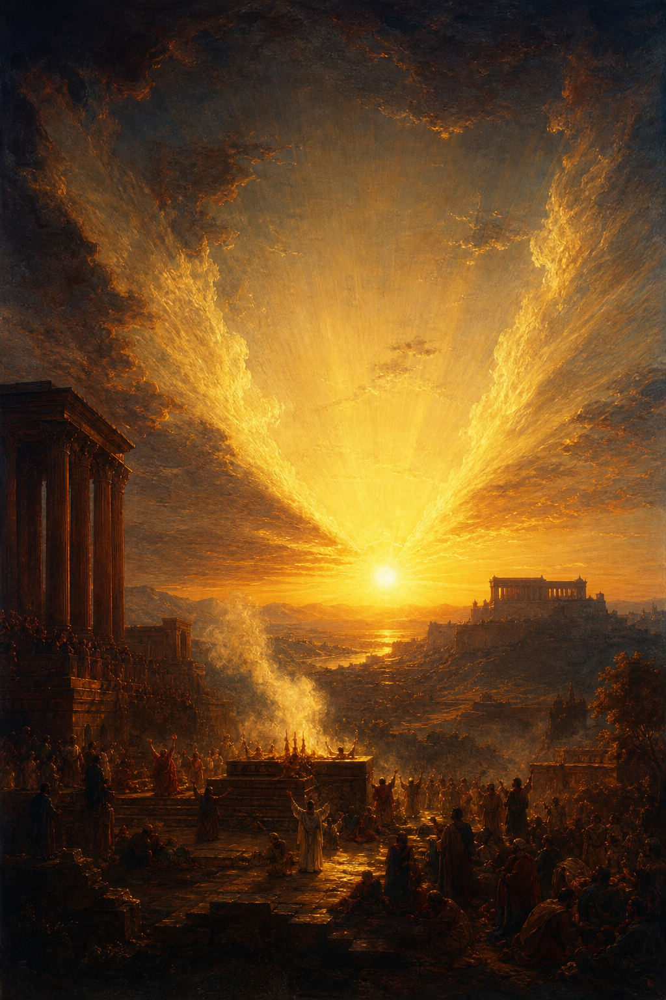

Old Testament · Book 39 of 39
Malachi
The last voice of the Old Testament confronts a weary, half-hearted people, then falls silent for four hundred years with a promise of a messenger still to come.
Malachi closes the Old Testament in the form of a courtroom dialogue: the LORD makes a charge, the people object, and the LORD answers each objection point by point, exposing a nation that has grown cynical, going through the motions of worship while its heart has drifted far from covenant love.
Behold, I will send my messenger, and he shall prepare the way before me.
What happens in Malachi
Roughly a century after the exiles returned and the temple was rebuilt, the initial zeal has worn off. Malachi opens with the LORD declaring his love for Israel, which the people flatly question, and from there the book moves through a series of charges: priests who offer blind, lame, and sick animals on the altar while insisting it is too much trouble to do better; a people who have broken faith with the wives of their youth through casual divorce; and a nation that asks "Where is the God of justice?" even as it withholds the tithes and offerings that were never truly theirs to keep. In the middle of this bleak accounting, Malachi promises that a messenger will come to prepare the way before the LORD, and that the LORD himself will suddenly appear in his temple like a refiner's fire, purifying the sons of Levi until their offerings are once again pleasing. The book ends with a direct call to remember the law of Moses and a final promise: before "the great and dreadful day of the LORD," God will send Elijah the prophet to turn the hearts of fathers to children and children to fathers, lest the land be struck with a curse.
Why it matters
Malachi is the last recorded prophetic word before four centuries of silence until the appearance of John the Baptist, whom the Gospels directly identify as the "Elijah" and the messenger this book foretells. Its unflinching diagnosis, that the real danger to faith is not open rebellion but weary, going-through-the-motions religion, gives the whole Old Testament a fitting closing note: a tired people, a patient God, and a promise that the story is not yet finished.